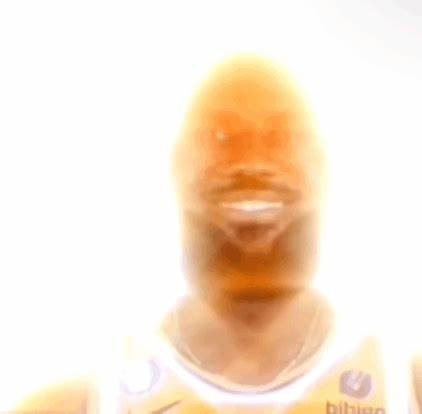
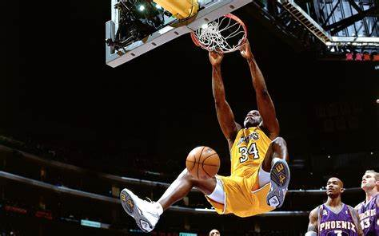
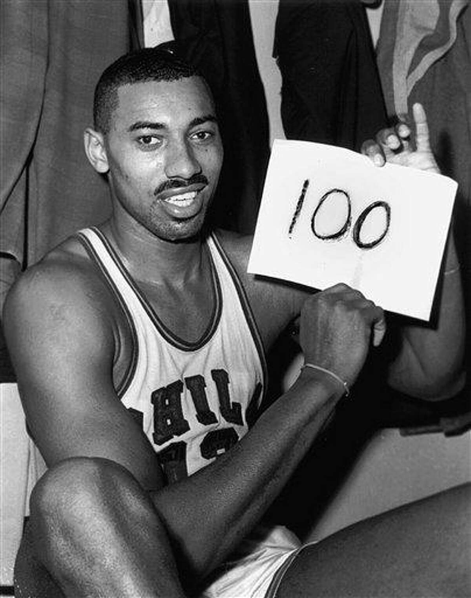
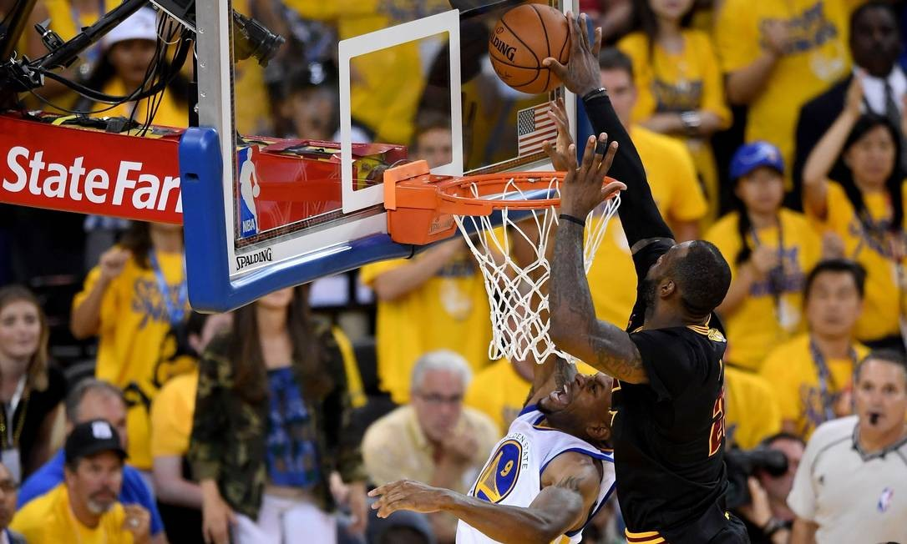
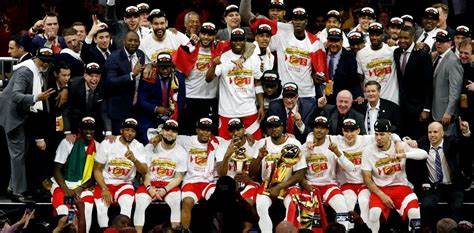

Hoje vamos recordar algumas das histórias mais incríveis do basquete. Entre elas, o famoso jogo em que Wilt Chamberlain fez 100 pontos!
|  |  |
Um dos momentos mais inesquecíveis foi quando Wilt Chamberlain anotou incríveis 100 pontos em um único jogo!
|  |
No dia 2 de março de 1962, na cidade de Hershey, na Pensilvânia, Wilt Chamberlain estabeleceu o recorde de pontuação em um único jogo da NBA ao somar 100 pontos na vitória do Philadelphia Warriors por 169 a 147 contra o New York Knicks.
Chamberlain terminou o primeiro quarto com 23 pontos, foi para o intervalo com 41, somou outros 28 no terceiro quarto e 31 no último quarto para chegar à marca de 100.
No jogo, ele acertou 36 dos 63 arremessos de quadra que tentou (57,1% de aproveitamento) e 28 dos 32 lances livres (87,5% de aproveitamento), mesmo tendo apenas 51,1% de aproveitamento nesse quesito na carreira.
Além dos pontos, Chamberlain também teve 25 rebotes e 2 assistências nos 48 minutos em que esteve em quadra.
No vestiário após o jogo, o estatístico esportivo da Filadélfia, Harvey Pollack, escreveu o número “100” em um pedaço de papel e pediu ao jogador para mostrasse aos fotógrafos, criando assim uma das imagens mais icônicas da história do basquete.
O recorde de Wilt Chamberlain dura mais de seis décadas, e apenas um jogador ficou a menos de 20 pontos de sua marca: Kobe Bryant, em 2006.
Jogos Históricos da NBA #5 – Game 7, Cleveland Cavaliers vs Golden State WarriorsNunca
|  |
na história das Finais da NBA uma equipe que perdia a série por 3 a 0 conseguiu reverter a desvantagem e ficar com o título. Na verdade, nenhum time virou uma derrota por 3 a 0 em nenhuma série dos playoffs do melhor basquete do mundo. A maior virada da decisão
aconteceu em 2016 e contou com LeBron James, um dos maiores jogadores de todos os tempos, e Kyrie Irving, atualmente no Dallas Mavericks, que saiu derrotado nos três primeiros duelos contra o Boston Celtics pela disputa do troféu Larry O'Brien.
Na ocasião, LeBron James e Kyrie Irving, principais estrelas do Cleveland Cavaliers, perdiam por 3 a 1 para o Golden State Warriors, de Stephen Curry e Klay Thomspon, que tinha quebrado o recorde de vitórias na temporada regular: foram 73 triunfos e apenas nove derrotas. Mesmo
com os números a favor da franquia da Califórnia, LeBron e Cavs desafiaram o impossível e tentaram reverter a desvantagem. E conseguiram.
No Jogo 5, na Oracle Arena, ginásio do Golden State Warriors, o Cleveland Cavaliers jogou um balde de água fria nos donos da casa ao vencer por 112 a 97 e impedir o título antecipado. A sexta partida foi em Cleveland, com os Cavs enfrentando a eliminação: sem problemas. Vitória por 115 a 101 e Jogo 7 forçado na Califórnia.
A sétima partida foi marcada por tensão e nervosismo dos dois lados. O Warriors buscava confirmar o bicampeonato justamente contra o Cavaliers, que havia perdido em 2015 sem a presença de Irving na quadra. E o armador foi quem desequilibrou a série ao acertar uma bola de três
no final da partida que deu a liderança para os Cavs. Antes disso, LeBron James ficou marcado em bloquear Andre Igoudala, MVP das Finais anteriores, em um contra-ataque. Final: 93 a 89 e o impossível tornou-se possível.
Antes do Cleveland Cavaliers ser campeão da NBA em 2016, equipes que perdiam por 3 a 1 nas Finais nunca conseguiram virar a decisão e perderam todas as 32 séries disputadas. Na história da liga, todos os times que saíram perdendo por 3 a 0 nos playoffs foram eliminados. Ao todo, são 156 derrotas.
Jogos Históricos da NBA #5 – Game 7, Cleveland Cavaliers vs Golden State WarriorsNunca
|  |
Antes da série final 2018/2019, pouquíssimos poderiam apostar que o Toronto Raptors fosse desbancar o poderoso Golden State Warriors, campeão de três títulos nos últimos quatro anos.
Pois o imponderável aconteceu, e logo na última partida na Oracle Arena, a dinastia dos Warriors foi derrubada.
Em um duelo acirrado até o último segundo, o time canadense venceu o Golden State, em Oakland, por 114 a 110 , fechando a série em 4 a 2 e conquistando o título inédito para a franquia e para o país.
Esse foi o primeiro troféu de campeão de um time canadense na história da NBA.
Com 22 pontos no jogo 6, Kawhi Leonard foi eleito o MVP da final da NBA 2018/2019. Nesta quinta, ele não foi o cestinha, mas o jogador saiu da Califórnia como o grande herói do título.
Kyle Lowry e Pascal Siakam fizeram 26 pontos cada, os maiores pontuadores dos Raptors, e também foram determinantes na conquista inédita.
Pelo lado do Golden State Warriors, os Splash Brothers até que tentaram suprir a ausência de Kevin Durant, machucado.
Com 30 pontos, Klay Thompson comandou o time da casa por 2/3 do duelo, mas também machucou o joelho no fim do terceiro quarto e desfalcou seu time.